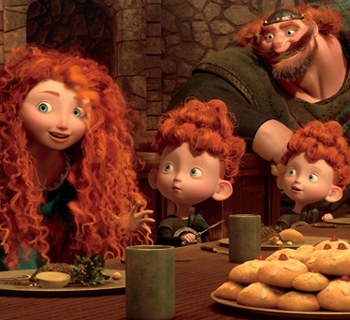

Empire Biscuits from "Brave"

A recreation of the famous biscuits from the 2012 Disney movie Brave
Ingredients
Biscuits
- 2-3 cups flour (depending on how sticky the batter is)
- 3/4 cup sugar
- 1/2 cup butter
- 1/4 cup whole milk
- 3 eggs
- 2 tablespoons vanilla extract
- 1 tablespoon baking powder
Icing
- 1/2 cup confectioners sugar
- 1-2 tablespoons whole milk
- Glacé cherries
Steps
- Preheat oven to 350 degrees. Combine four, baking powder and salt and set aside. In a stand mixer, cream together softened butter and sugar. Next add milk, followed by one egg at a time, and then vanilla extract. Slowly add in flour mixture until well combined. Drop cookie dough onto a baking sheet and bake 7-9 minutes. Let cookies full cool before icing.
- Combine confectioners sugar with milk and mix until a not too runny consistency is formed. You might need to experiment by adding more milk or icing sugar until the right consistency is achieved. Top iced cookies with glacé cherries.
Back to the Homepage